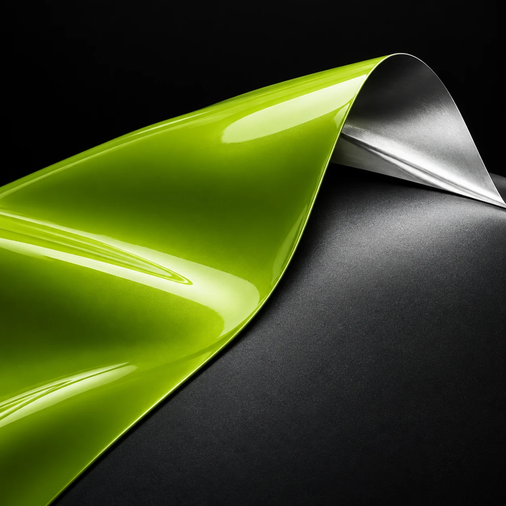

Gloss catches the light. Satin brings out the curves. Matte gives the silhouette a quieter presence. We find the finish that brings out your car’s best.
CRAFT YOU CAN SEE UP CLOSE
INDIVIDUAL PANELS
Small detail. Big difference.
Roof, mirrors, bonnet. Sometimes one detail is all it takes to give a familiar silhouette a fresh feel.
Clean lines. Carefully placed seams. Attention to every edge.
CHROME DELETE & DESIGN
Your style. Down to the last line.
Dark gloss instead of chrome, contrasting mirrors or a two-tone wrap. Details that complete the look.
Illustrations of the studio process. Cutline visual concepts.
CUTLINE SERVICES
WHAT CAN WE CHANGE ON YOUR CAR?
CUTLINE / VINYL STUDIOFull wrap
A new colour for the whole car. Gloss, satin, matte or metallic — to match your character.
Visual service concepts.
MORE THAN A NEW COLOURCUTLINE / MATERIAL LAB
Change the look. Keep what matters.
Your car. Your next move. What matters most to you?

RE:DEFINE
+COLOUR YOU CAN FEEL
VINYLNEW SURFACE. YOUR ORIGINAL PAINT.
Still your car. A whole new feeling.
Deep matte, clean gloss or bold metallic. Find your shade with real vinyl samples — for a full wrap or a single detail.
A NEW LOOK WITHOUT REPAINTING
Colour on the outside. Original paint underneath.
Vinyl adds a barrier against minor scuffs. We inspect the paint before installation. For stone-chip protection, we can discuss a separate solution: paint protection film (PPF).
INSPECTION FIRST. VINYL SECOND.
Bold today. Your choice tomorrow.
Vinyl can be professionally removed when you are ready for a new look. Safe removal depends on paint condition, material and age — we discuss all of this before starting.
ROOM FOR YOUR NEXT IDEA
Not sure where to start?
CUTLINE / AFTER DARK
OUR GARAGE.
Wrap design concepts. Cars and reviews are illustrative examples.
CHOOSE YOUR CHARACTER01 / 03
ACID LIME / CUSTOM GRAPHICS
NISSAN 350Z
SWITCH CAR
Full wrap · custom graphics · gloss finish
FALL FOR YOUR CAR AGAINYOUR CAR. YOUR WAY.
Park up.Walk a few steps away.And look back —because now it looks just the way you wanted.
Drag the slider to try a new look. Wrap concepts, not photos of completed projects. The final shade is chosen using a physical vinyl sample.
BEFOREAFTER
‹ ›
BMW M4
Acid Lime Gloss
GLOSS
BEFOREAFTER
‹ ›
PORSCHE 911
Frozen Emerald
MATTE
BEFOREAFTER
‹ ›
AUDI RS6
Liquid Ultra Blue
METALLIC
YOUR JOURNEY WITH CUTLINEFROM “I WANT THAT” TO “THAT’S MINE”
You set the direction. We take care of the result.
We agree on the colour, price and timeline before we start. Then we take care of every detail.
YOUR IDEA
LET’S TALK
Tell us about your car.
Show us your car and the look you like. We will decide what to change: the whole body or a few details.
THE RESULTA clear direction
A SHARED DECISION
SAMPLES & INSPECTION
Choose it in person.
We view vinyl under different lighting and inspect the paint. Together we agree on the material, quote and timeline.
THE RESULTAn agreed plan
IN EXPERT HANDS
IN THE STUDIO
Refining every line.
We prepare the body, apply the vinyl and finish every seam and edge. The result is checked before handover.
THE RESULTYour new look, complete
YOUR FIRST DRIVE
TIME TO COLLECT
Pick it up. Feel the difference.
We inspect the car together and explain how to wash and care for the vinyl to keep it looking its best.
THE RESULTYour car. A new feeling.
The next step is simple: tell us about your car.
YOUR CAR · YOUR IDEA · CUTLINE
What does a new colour cost?
Tell us your car model and what you would like to change: the full body or individual panels. We will start with vinyl options and a quote.
Not sure about the colour yet? We can help you choose.